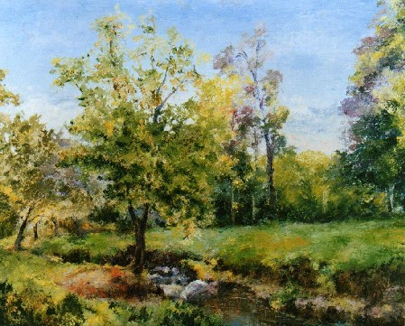
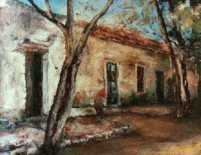
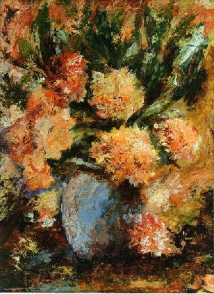

Aquel prado verde…
| Entrevista con la artista plástica Amanda Avaro (Argentina). |
 |
Una casa en la loma, donde nació y transcurrió
su niñez, entorno de paisaje en llanura de “Elena”,
cerca de Río Cuarto (Provincia de Córdoba, Argentina), marcó
la existencia de Amanda, esta
enigmática pintora y docente de quien nos ocupamos este mes.
Nacida en mayo de 1958, comenzó a pintar paisajes desde que tiene uso
de razón y también rostros,
tratando de procurar “vida” en lo que expresa: “Pinto un cuadro
y es como si estuviera vivo…”
Estudió en un Colegio Católico de
Hermanas donde estuvo interna, hasta que obtuvo, siendo
adolescente, una beca a los Estados Unidos; hecho que significó un hito
de liberación y apertura
desde una vida casi monacal, como la que había llevado.
De regreso, culminó el secundario y estudió pintura en una localidad
cercana a la suya
natal y luego, se trasladó a Córdoba Capital donde estudió
Profesorado de Inglés en la Universidad,
a la vez que trabajada en diferentes lugares, entre ellos la Central Atómica
de Embalse de Río
Tercero y una Clínica de hemodiálisis.
Una crisis existencial que duró diez años, entre el final de su
juventud y la transición
a la adultez, determinó el abandono del arte y el cese de lo que denominó
la “búsqueda de
las cosas de afuera, que se obtiene a partir de las demás personas”
y comenzó a buscar dentro
de sí misma… “Ahora busco, sin buscar…”
El regreso a la pintura, siendo ya mamá de dos hijos, ha implicado un
“volver a ser” de
manera diferente: “un secreto no es lo que no se dice, es aquello para
lo cual no existen
palabras que permitan expresarlo”
Se brinda a los demás a través de
la docencia y “el estar con los chicos, me ha permitido,
sembrar mucho más…”
 |
A través de la entrevista, me pregunté
varias veces: ¿Dónde estás, Amanda? ¿Dónde
transcurre
tu ser esencial?
Quizás, en el silencio de la espera. Esa
espera que no es una expectativa vacía, sino la verdad
interior de alcanzar su meta. Sólo esta verdad interior otorga la luminosidad
que lleva al éxito.
Finalmente, la tenacidad permite disfrutar en el camino, la luz al que éste
nos conduce, previamente…
Entonces, los obstáculos para llegar, con la implicancia del peligro
en ciernes, no amedrenta; pues
la promesa del arribo, es más fuerte.
En este final feliz, está el destino que
se cumplirá por sí mismo, aquél que Amanda esperaba, cuando
era pequeña.
Cuando en aquella llanura, desistió subir
los peldaños al cielo que imaginaba, pues debía
convertirse en mujer y madre y prodigarnos su fascinante misterio:
“Somos un envoltorio de una esencia que transciende
a lo que es; sueños, para los cuales, las cobijas,
comienzan a pesar mucho”
”Nos relacionamos mediante ese envoltorio; la gente se pone en contacto
a través de los huesos y de
la carne y nos miran a partir de ellos y las circunstancias que confluyen en
fijarnos un lugar.
Desde él, nos ayudamos o nos atacamos; es
un aleatorio, pero lo cierto es que todos estamos en
el mismo bote; por eso, creo en la amistad”
 |
Esta serena donación que nos brinda, que
se vislumbra tranquila y clara, es la que nos
trasmite en sus obras.
En el mensaje, se decantan los conceptos acerca
de lo recto para que alimentemos nuestras
vidas: Quienes no seamos capaces de cosechar en ellas, sólo actuaremos
en desparramo.
E-mail: avaro_amanda@hotmail.com